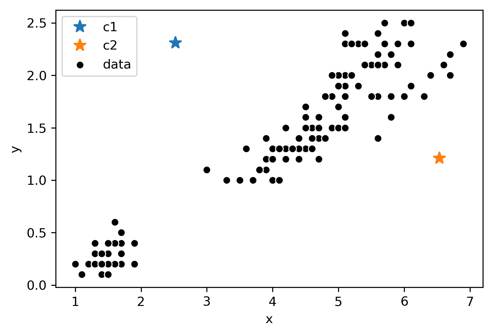
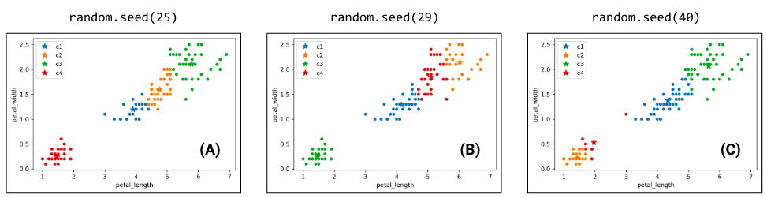
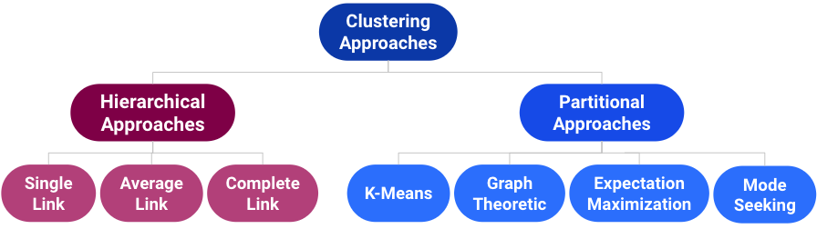
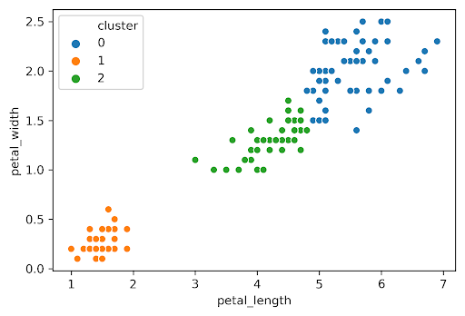

27 Clustering
28 Clustering
Last time, we began our journey into unsupervised learning by discussing about Principal Component Analysis (PCA).
In this lecture, we will explore another very popular unsupervised learning unsupervised learning concept: clustering. Clustering allows us to ‘group’ similar data together, without being given labels of what ‘class’ or where data explicitly comes from. We will discuss two clustering algorithms: K-Means clustering and hierarchichal agglomerative clustering, examining the assumptions, strengths, and drawbacks to each one.
28.0.1 Supervised Learning
In “Supervised Learning”, our goal is to create a function that maps inputs to outputs. Each model is learned from example input/output pairs (training set), validated using input/output pairs, and eventually tested on more input/output pairs. Each pair consists of:
- Input vector.
- Output value (label, value).
In regression, our output value is quantitative and in classification, our output value is categorical.

28.0.2 Unsupervised Learning
In “Unsupervised Learning”, our goal is to identify patterns in unlabeled data. In this type of learning, we do not have input/output pairs. Sometimes we may have labels, but we’re just choosing to ignore them (e.g. PCA on labeled data). Instead, we are more interested in the inherent structure of the data we have, rather than trying to simply predict a label using that structure of data.
For example, if we are interested in dimensionality reduction, we can use PCA to reduce our data to a lower dimension.
Now let us consider a new problem: Clustering.
28.0.2.1 Clustering Example(s)
Consider the figure shown from Fall 2019 Midterm 2.

Each point represents the 1st and 2nd principal component of how much time patrons spent at 8 different zoo exhibits. The original dataset was 8 dimensions, but we have used PCA to reduce our data down to 2 dimensions.
Visually and inuitively, we could potentially guess that this data belongs to 3 groups: one for each cluster. The goal of clustering is now to assign each point (in the 2 dimensional PCA representation) to a cluster.
This is an unsupervised task:
- We don’t have labels for each visitor.
- Want to infer pattern even without labels.
Now, consider the plot below:

The rows of this plot are conditions (e.g. a row might be: “poured acid on the cells”) and the columns are genes. The green coloration indicates that the gene was ~off (red indicates the gene was ~on). For example, the ~9 genes in the top left corner of the plot were all turned off by the 6 experiments (rows) at the top.
In a clustering lens, we might be interested in clustering similar observations together based on the reactions (on/off) to certain experiments.
Note: Apologies if you can’t differentiate red from green by eye! Historical visualizations are not always the best.
28.0.3 Taxonomy of Clustering Approaches

There are many types of clustering algorithms, all that have strengths, inherent weaknesses, and different use cases. We will first focus on a partitional approach: K-Means clustering.
28.1 K-Means Clustering
The most popular clustering approach is K-Means. The algorithm itself:
- Pick an arbitrary \(K\), and randomly place \(K\) “centers”, each a different color.
- Repeat until convergence:
- Color points according to the closest center.
- Move center for each color to center of points with that color.
Consider the following data with arbitrary \(K = 2\), with randomly placed “centers” denoted by the different (blue, orange) colors:

Now, we will follow the rest of the algorithm. First, let us color each point according to the closest center:

Next, we will move the center for each color to the center of points with that color. Notice how the centers are generally well centered amongst the data that shares its color.

Assume this process (re-color, re-set centers) repeats for a few more iterations, and now we’ve ended up at this state.

After this iteration, the center stays still and does not move at all. Thus, we have converged, and the clustering is completed.
28.1.0.1 Note
A quick note: K-Means is a totally different algorithm than “K-Nearest Neighbors”.
- K-Means: For clustering:
- Assigns each point to one of K clusters.
- K-Nearest Neighbors: For Classification (or less often, Regression):
- Prediction is the most common class among the k-nearest data points in the training set.
- This is covered in Data 8.
The names may be similar, but there isn’t really anything in common.
28.2 Minimizing Inertia
Consider the following example where \(K = 4\):
Due to the randomness where the \(K\) centers initialize/start, you will get a different output/clustering every time you run K-Means. Consider three possible K-Means outputs (the algorithm has converged and the colors denote the final cluster they are clustered as)

Which clustering output is the best? To evaluate different clustering results, we need a loss function.
Two common loss functions:
- Inertia: Sum of squared distances from each data point to its center.
- Distortion: Weighted sum of squared distances from each data point to its center.

In the example above:
- Calculated inertia: \(0.472 + 0.192 + 0.342 + 0.252 + 0.582 + 0.362 + 0.442\)
- Calculated distortion: \((0.472 + 0.192 + 0.342)/3 + (0.252 + 0.582 + 0.362 + 0.442)/4\)
Switching back to the four cluster example at the beginning of this section, the random.seed(25) had an inertia of 44.96, the random.seed(29) had an inertia of 45.95, and the random.seed(40) had an inertia of 54.35.
It seems that the best clustering output was random.seed(25) with an inertia of 44.96.
It turns out that the function K-Means is trying to minimize is inertia… but often fails to find global optimum. Why does this happen?
We can think of K-means as a pair of optimizers that take turns:
- First optimizer:
- Holds center positions constant.
- Optimizes data colors.
- Second optimizer:
- Holds data colors constant.
- Optimizes center positions.
- Neither gets total control!
This is a hard problem: Give an algorithm that optimizes inertia FOR A GIVEN \(K\). \(K\) is picked in advance.
- Your algorithm should return the EXACT best centers and colors.
- Don’t worry about runtime.
Note: This is a bit of a CS61B/CS70/CS170 problem, so do not worry about completely understanding the tricky predicament we are in too much!
A potential algorithm:
- For all possible kn colorings:
- Compute the k centers for that coloring.
- Compute the inertia for the k centers.
- If current inertia is better than best known, write down the current centers and coloring and call that the new best known.
No better algorithm has been found for solving the problem of minimizing inertia exactly.
28.3 Hierarchical Agglomerative Clustering
Now, let us consider hierarchical agglomerative clustering.

Consider the following results of a two K-Means clustering outputs:

Which clustering result do you like better? It seems K-Means likes the one on the right better because it has lower inertia (the sum of squared distances from each data point to its center). This raises some questions:
- Why is the inertia on the right lower? K-Means optimizes for distance, not “blobbines”
- Is clustering on the right “wrong”? Good question!
Now, let us introduce Hierarchical Agglomerative Clustering:
We start with every data point in a separate cluster.
We keep merging the most similar pairs of data points/clusters until we have one big cluster left.
This is called a bottom-up or agglomerative method.
There are various ways to decide the order of combining clusters called Linkage Criterion.
Single linkage: Similarity of the most similar: the distance between two clusters as the minimum distance between a point in the first cluster and a point in the second.
Complete linkage: Similarity of the least similar: the distance between two clusters as the maximum distance between a point in the first cluster and a point in the second.
Average linkage: Average similarity of pairs of points in clusters.

When the algorithm starts, every data point is in its own cluster. In the plot below, there are 12 data points, so the algorithm starts with 12 clusters. As the clustering begins, it begins to assess which clusters are the closest together.
The closest clusters are 10 and 11, so they are merged together.

Next, points 0 and 4 are merged together because they are closest.

At this point, we have 10 clusters: 8 with a single point (1, 2, 3, 4, 5, 6, 7, 8, 9) and 2 with 2 points (0, 10).
Although clusters 0 and 3 are not the closest, let us consider if we were trying to merge them.
A tricky question arises:
- What is the distance between clusters 0 and 3? We can use the Complete-Link approach that uses the max distance amongest all pairs of points between groups.

Let us assume the algorithm runs a little longer and we have reached the following state. Clusters 0 and 7 are up next; but why? The max line between any member of 0 and 6 is longer than the max line between any member of 0 and 7.

Thus, 0 and 7 are merged into 0.
After more iterations, we finally converge to the plot on the left. There are two clusters (0, 1), and the agglomerative algorithm has converged.

Notice that on the full dataset, our agglomerative clustering algorithm gets the “correct” output.
28.3.1 Clustering, Dendrograms, and Intuition
Agglomerative clustering is one form of “hierarchical clustering.” It is interpretable because:
- We can keep track of when two clusters got merged.
- Each cluster is a tree.
- Can visualize merging hierarchy, resulting in a “dendrogram.”
- Won’t discuss any further, but you might see these in the wild.
Here are some examples:


Some professors use agglomerative clustering for grading bins.
- If there is a big gap between two people, draw a grading threshold there.
- The idea: Grade clustering should be more like left figure, not right.

28.4 Picking K
The algorithms we’ve discussed require us to pick a \(K\) before we start. But how do we pick \(K\)?

Often, the best \(K\) is subjective:
- Example: State plot.
- How many clusters are there here?
For K-Means, one approach is to plot inertia versus many different \(K\) values.
- Pick the \(K\) in the “elbow”, where we get diminishing returns afterwards.
- Note: Big complicated data often lacks an elbow, so this method is not fool proof.

Here, we would likely select \(K = 2\).
28.4.1 Silhouette Scores
To evaluate how “well-clustered” a specific data point is, we can use the “silhouette score”, a.k.a. the “silhouette width”.
- High score: Near the other points in its X’s cluster.
- Low score: Far from the other points in its cluster.
For a data point \(X\), score \(S\) is:
- \(A\) = avg distance to other points in cluster.
- \(B\) = avg distance to points in closest cluster.
- \(S\) = \(\frac{B - A}{max(A, B)}\)
Consider what the highest possible value of \(S\) is and how can that value occur? The highest possible value of \(S\) is 1. This happens if every point in \(X\)’s cluster is right on top of \(X\): The average distance to other points in \(X\)’s cluster is \(0\), so \(A = 0\). Thus, \(\frac{B}{max(0, B)} = \frac{B}{B} = 1\). Additionally, another case where \(S = 1\) could happen is if \(B >> A\).
Now, can \(S\) be negative? The answer is yes. If the average distance to X’s clustermates is larger than distance to the closest cluster.
Example: The “low score” point on the right has \(S = -0.13\)
28.4.2 Silhouette Plot
We can plot the Silhouette Scores for all of our data points.
- Points with large silhouette widths are deeply embedded in their cluster.
- Red dotted line shows the average.
The plot below is the silhouette score for the plot above:
What do you notice?

Similarly, the plot below is the silhouette score for the plot above:

The average silhouette score is lower with 3 clusters, and thus \(K=2\) is a better choice. This aligns with our visual intution as well.
28.4.3 Picking K: Real World Metrics (Example via Andrew Ng)
Sometimes you can rely on real world metrics to guide your choice of K.
Perform 2 clusterings:
- Cluster heights and weights of customers with \(K = 3\) to design Small, Medium, and Large shirts.
- Cluster heights and weights of customers with \(K = 5\) to design XS, S, M, L, and XL shirts.
To pick \(K\):
- Consider projected costs and sales for the 2 different \(K\)s.
- Pick the one that maximizes profit.
28.5 Conclusion
We’ve now discussed a new machine learning goal: Clustering. We saw two solutions:
- K-Means
- K-Means tries to optimize a loss function called inertia (no known algorithm to find the optimal answer in an efficient manner.)
- Hierarchical Agglomerative
Our version of these algorithms required a hyperparameter \(K\).
- 4 ways to pick \(K\): Intuitively, elbow method, silhouette scores, harnessing real world metrics.
There are many Machine Learning problems.
- Each can be addressed by many different solution techniques.
- Each has many metrics for evaluating success / loss.
Many solution technique can be used for multiple problem types.
- Example: Linear models can be used for regression and classification.
We’ve only scratched the surface. Haven’t discussed many important ideas.
- One hugely important solution technique: Neural Networks / Deep Learning.
- Will provide some specific course recommendations in the last lecture.